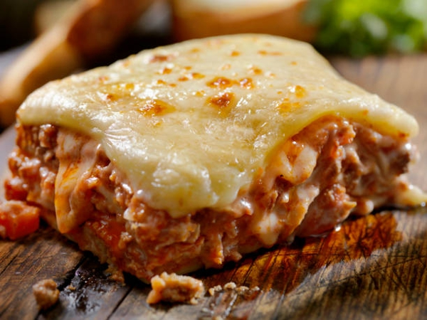

Go back to Homepage
The Yummiest Lasagna Recipe

Description
This classic lasagna is made with an easy meat sauce as the base. Layer the sauce with noodles and a lot of cheese. Filling and satisfying.
Ingredients
- 1 pound sweet Italian sausage
- ¾ pound lean ground beef
- ½ cup minced onion
- 2 cloves garlic, crushed
- 2 cans of tomato sauce
- your favorite lasagna noodles
- ricotta cheese and mozzarella cheese, sliced
Steps for making your lasagna
- Cook sausage, ground beef and garlic over medium heat until well browned. Stir in tomato sauce.
- Cook lasagna noodles in boiling water for 8 to 10 minutes.
- Preheat oven to 375 degrees F (190 degrees C).
- To assemble, spread the meat sauce, the ricotta and the mozzarella cheese, make layers using the lasagna noodles.
- Cover with foil and bake in preheated oven for 25 minutes. Remove foil, and bake an additional 25 minutes. Cool for 15 minutes before serving.
Enjoy!!